Trials 1 to 4 are shown below. Trial 5 is on the Part 2 page. The blank outer canvas is removed for display, but the plate borders remain. Each trial starts its image numbering at 1.
Trial 1
Image 1: 00056v. Green (-1, -5) px, red (-1, -13) px.Image 2: 00125v. Green (-2, -5) px, red (-1, -10) px.
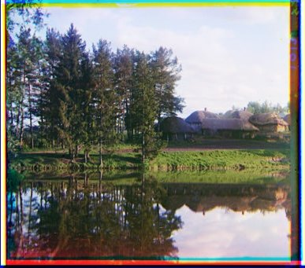
Image 3: 00163v. Green (-1, 3) px, red (-1, 4) px.
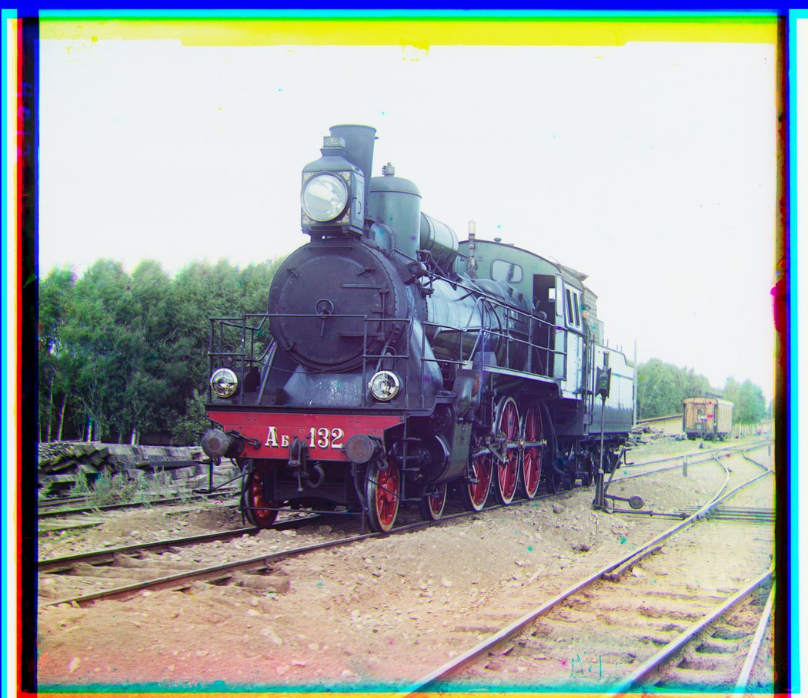
Image 4: 00458u. Green (-7, -42) px, red (-32, -86) px.Image 5: 00804v. Green (2, -6) px, red (4, -13) px.
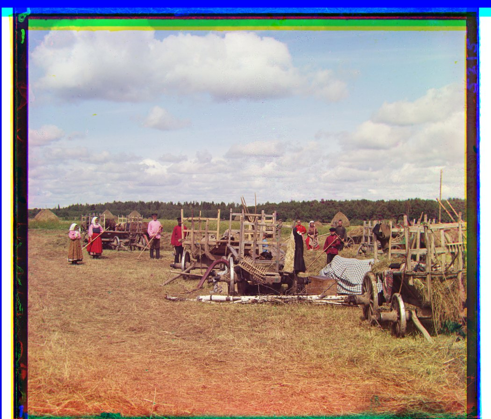
Image 6: 01007a. Green (-13, -59) px, red (-13, -128) px.Image 7: 01047u. Green (-20, -24) px, red (-34, -72) px.
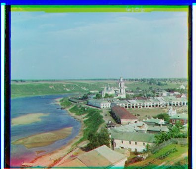
Image 8: 01164v. Green (-2, -6) px, red (-3, -11) px.Image 9: 01269v. Green (-2, -6) px, red (41, -44) px.Image 10: 01522v. Green (-2, -6) px, red (-2, -13) px.Image 11: 01597v. Green (-1, -7) px, red (-1, -16) px.Image 12: 01598v. Green (0, -8) px, red (1, -17) px.Image 13: 01657u. Green (-8, -52) px, red (-14, -114) px.
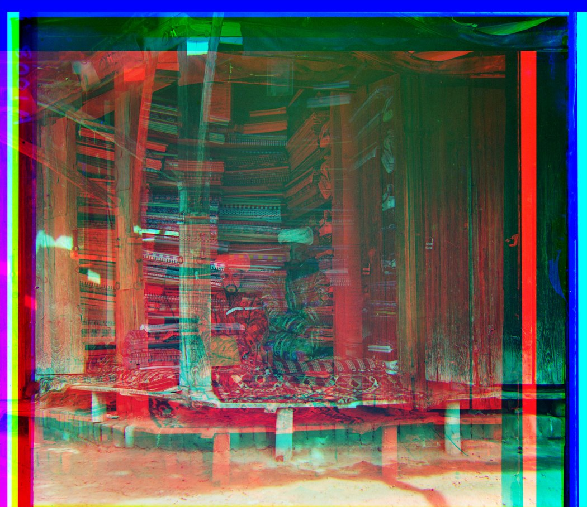
Image 14: 01725u. Green (-47, -76) px, red (322, -325) px.
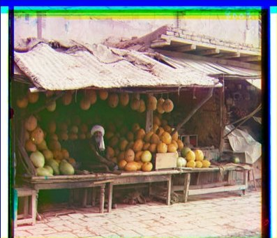
Image 15: 01728v. Green (-1, -9) px, red (-1, -19) px.Image 16: 01861a. Green (-39, -70) px, red (-62, -147) px.Image 17: 10131v. Green (-2, -6) px, red (-3, -12) px.Image 18: 31421v. Green (0, -9) px, red (0, -14) px.Image 19: beans. Green (4, -4) px, red (9, -11) px.Image 20: siren. Green (0, -5) px, red (2, -10) px.Image 21: vases. Green (-1, -2) px, red (-1, -12) px.
Trial 2
Image 1: 00056v. Green offset not recorded; red (-1, -13) px.
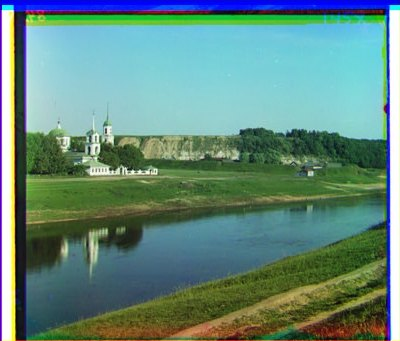
Image 2: 00125v. Green (-2, -5) px, red (-1, -10) px.Image 3: 00163v. Green (-1, 3) px, red (-1, 4) px.Image 4: 00458u. Green (-7, -42) px, red (-32, -86) px.Image 5: 00804v. Green (2, -6) px, red (4, -13) px.Image 6: 01007a. Green (-13, -59) px, red (-13, -128) px.Image 7: 01047u. Green (-20, -24) px, red (-34, -72) px.Image 8: 01164v. Green (-2, -6) px, red (-3, -11) px.
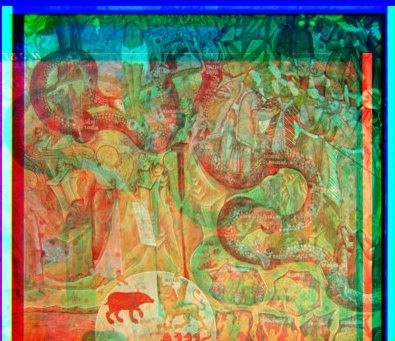
Image 9: 01269v. Green (-2, -6) px, red (23, -53) px.Image 10: 01522v. Green (-2, -6) px, red (-2, -13) px.Image 11: 01597v. Green (-1, -7) px, red (-1, -16) px.Image 12: 01598v. Green (0, -8) px, red (1, -17) px.Image 13: 01657u. Green (-8, -52) px, red (-14, -114) px.Image 14: 01725u. Green (-47, -76) px, red (322, -329) px.Image 15: 01728v. Green (-1, -9) px, red (-34, -17) px.Image 16: 01861a. Green (-39, -70) px, red (-62, -147) px.Image 17: 10131v. Green (-2, -6) px, red (-3, -12) px.Image 18: 31421v. Green (0, -9) px, red (0, -14) px.
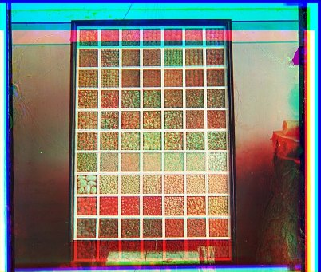
Image 19: beans. Green (4, -4) px, red (8, -38) px.Image 20: siren. Green (0, -5) px, red (2, -10) px.Image 21: vases. Green (-1, -2) px, red (-1, -12) px.
The Trial 2 text log begins after the green offset for Image 1. The saved image is included, but that value is not recorded.
Trial 3
Image 1: 00056v. Green (-1, -5) px, red (-1, -13) px.Image 2: 00125v. Green (-2, -5) px, red (-1, -10) px.Image 3: 00163v. Green (-1, 3) px, red (-1, 4) px.Image 4: 00458u. Green (-7, -42) px, red (-32, -86) px.Image 5: 00804v. Green (2, -6) px, red (4, -13) px.Image 6: 01007a. Green (-13, -59) px, red (-13, -128) px.Image 7: 01047u. Green (-20, -24) px, red (-34, -72) px.Image 8: 01164v. Green (-2, -6) px, red (-3, -11) px.Image 9: 01269v. Green (-2, -6) px, red (41, -44) px.Image 10: 01522v. Green (-2, -6) px, red (-2, -13) px.Image 11: 01597v. Green (-1, -7) px, red (-1, -16) px.
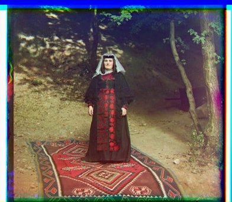
Image 12: 01598v. Green (0, -8) px, red (1, -17) px.
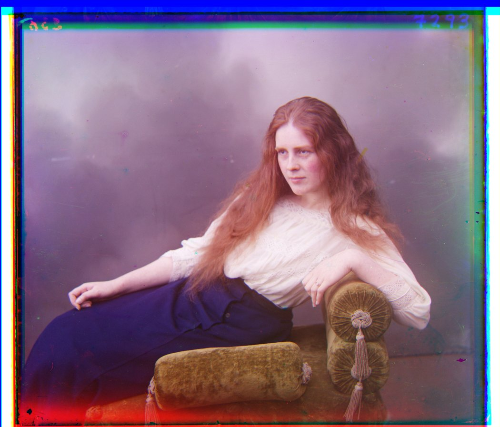
Image 13: 01657u. Green (-8, -52) px, red (-14, -114) px.Image 14: 01725u. Green (-47, -76) px, red (326, -341) px.Image 15: 01728v. Green (-1, -9) px, red (-1, -19) px.Image 16: 01861a. Green (-39, -70) px, red (-62, -147) px.
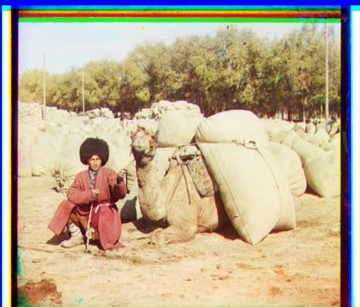
Image 17: 10131v. Green (-2, -6) px, red (-3, -12) px.Image 18: 31421v. Green (0, -9) px, red (0, -14) px.
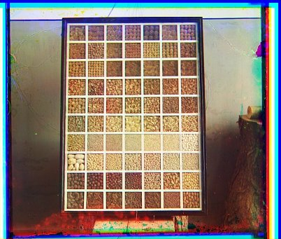
Image 19: beans. Green (4, -4) px, red (9, -11) px.Image 20: siren. Green (0, -5) px, red (2, -10) px.Image 21: vases. Green (-1, -2) px, red (-1, -12) px.
Trial 4
Image 1: 00056v. Green (-1, -5) px, red (-1, -13) px.Image 2: 00125v. Green (-2, -5) px, red (-1, -10) px.Image 3: 00163v. Green (-1, 3) px, red (-1, 4) px.Image 4: 00458u. Green (-7, -42) px, red (-32, -86) px.
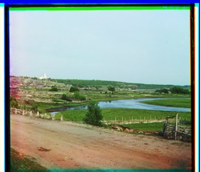
Image 5: 00804v. Green (2, -6) px, red (4, -13) px.Image 6: 01007a. Green (-13, -59) px, red (-13, -128) px.Image 7: 01047u. Green (-20, -24) px, red (-34, -72) px.Image 8: 01164v. Green (-2, -6) px, red (-3, -11) px.
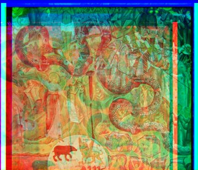
Image 9: 01269v. Green (-2, -6) px, red (41, -44) px.Image 10: 01522v. Green (-2, -6) px, red (-2, -13) px.Image 11: 01597v. Green (-1, -7) px, red (-1, -16) px.Image 12: 01598v. Green (0, -8) px, red (1, -17) px.Image 13: 01657u. Green (-8, -52) px, red (-14, -114) px.
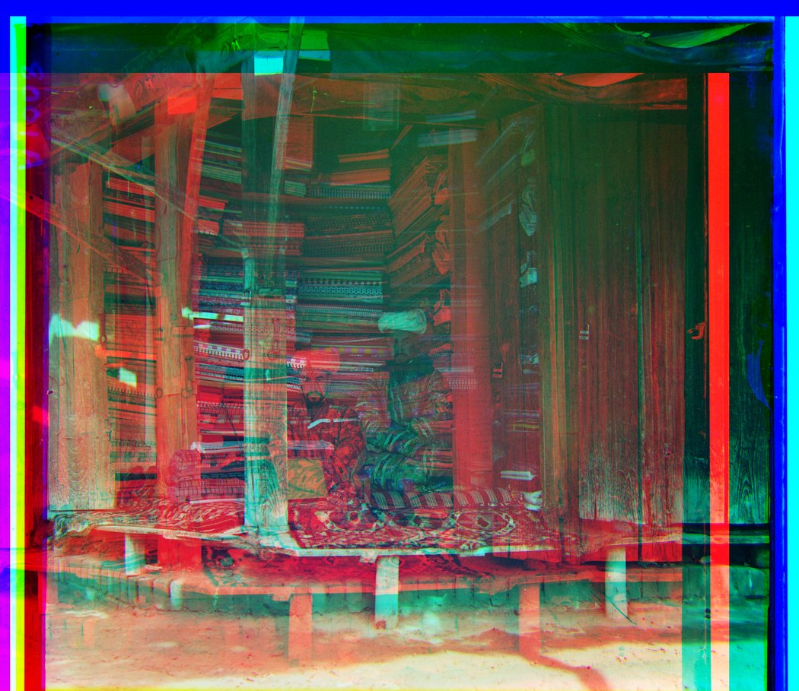
Image 14: 01725u. Green (-47, -76) px, red (326, -341) px.Image 15: 01728v. Green (-1, -9) px, red (-1, -19) px.
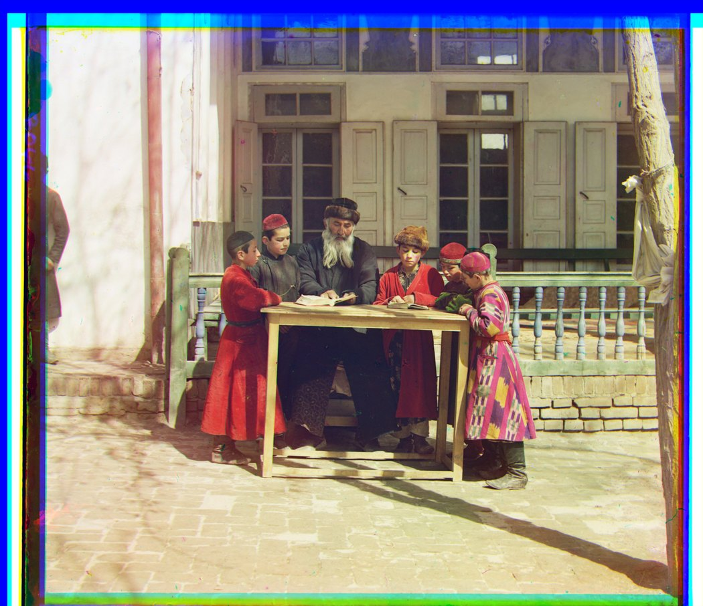
Image 16: 01861a. Green (-39, -70) px, red (-62, -147) px.Image 17: 10131v. Green (-2, -6) px, red (-3, -12) px.Image 18: 31421v. Green (0, -9) px, red (0, -14) px.Image 19: beans. Green (4, -4) px, red (9, -11) px.
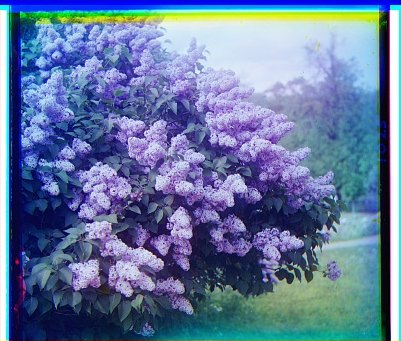
Image 20: siren. Green (0, -5) px, red (2, -10) px.
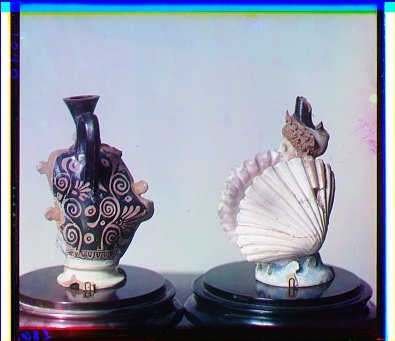
Image 21: vases. Green (-1, -2) px, red (-1, -12) px.